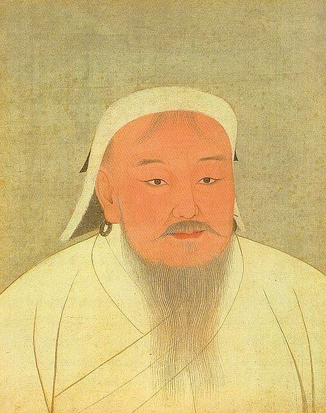
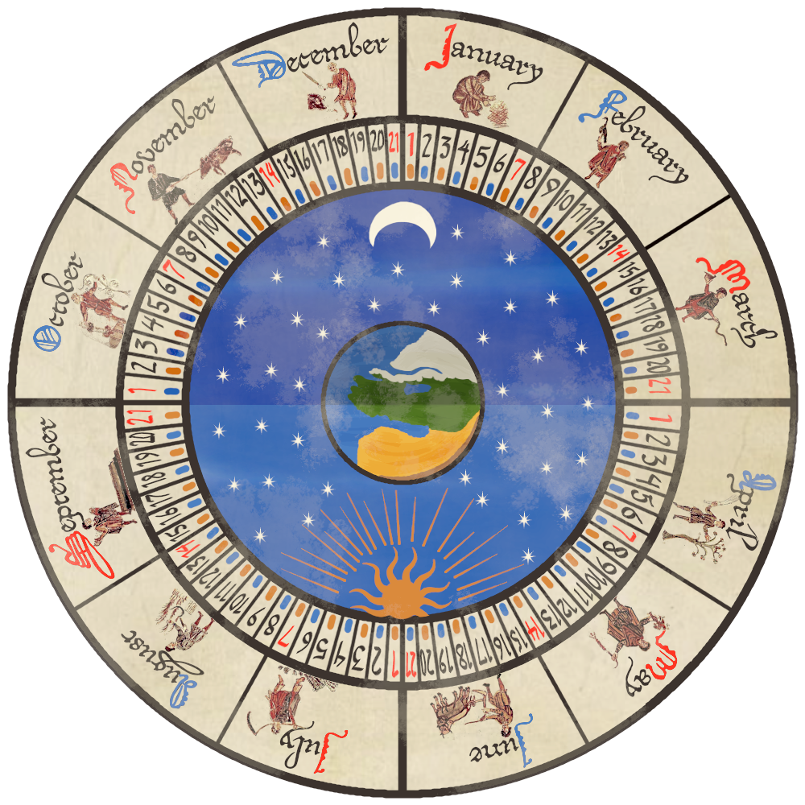
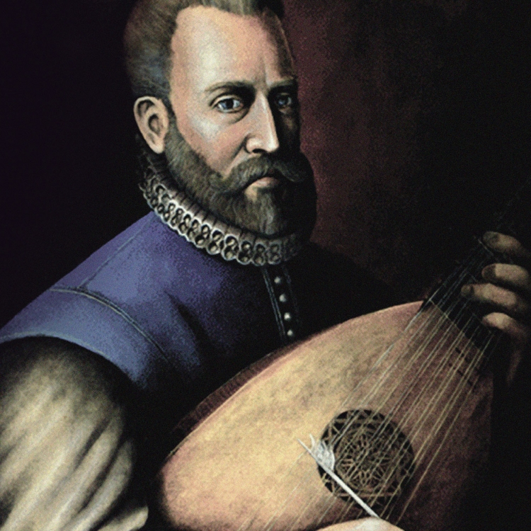
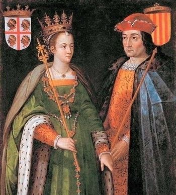

Genghis Khan becomes the ruler of Mongolia
Genghis Khan unites the various nomadic tribes in Mongolia, and begins a series of
conquests that stretch across Asia and parts of Europe. Read more...

The calendar is finally here!
A monk named Dionysius Exiguus creates this new dating system as part of his efforts to
understand the dating of Easter. It wanted the year 1 AD to be the date when Jesus Christ was born, although later
calculations show that his birth occurred before this. Gradually use of this calendar became more widespread, and
is now the most widely accepted system for counting years in the world. Read
more...

English songwriter, John Dowland, publishes new music
The Lachrimae, or Seaven Teares is finally published. It contains the seven pavans of
Lachrimae itself and 14 others, including the famous Semper Dowland semper Dolens. Read more...

The sweethearts are finally married!
Queen Isabella and King Ferdinand’s love story is the stuff romance novels are made of.
Because they were married in secret, Isabella was denied her right to the throne of Castile. From this came the
war over the succession of the Castillian throne. Isabella emerged victorious, and because of her marriage to King
Ferdinand of Aragon, their kingdoms merged into a powerful and unified empire, and their reign was known for
encouraging expeditions, including Christopher Columbus’s trip to what would later be known as the Americas. Read more...